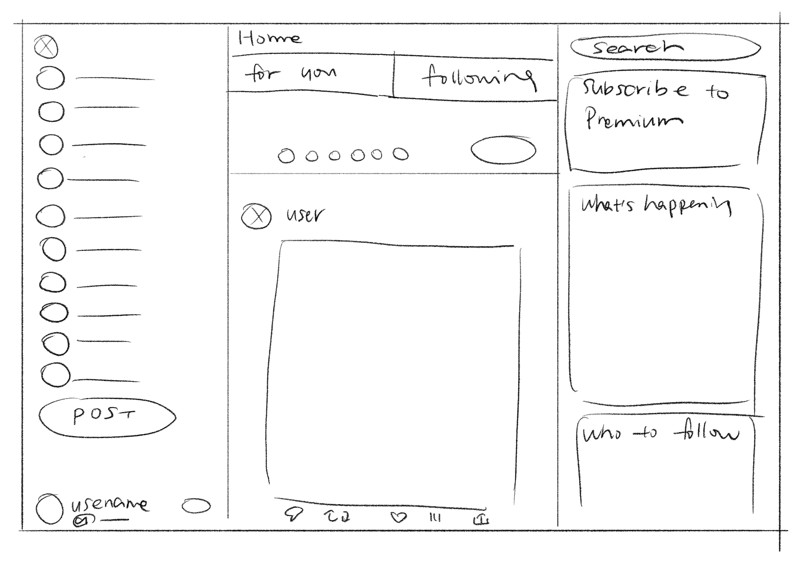
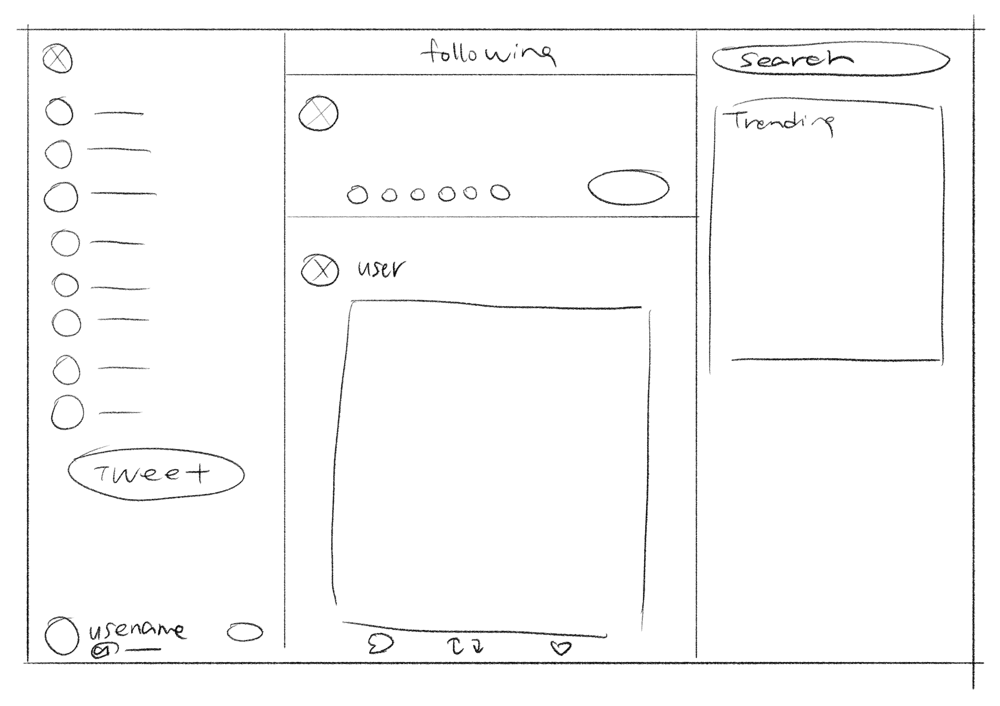

-
Using the favorite website you chose in homework 1, create a wireframe for one page of it using pen/paper, PowerPoint, or any your tool of choice. (use the 'img' tag!) Make sure to let us know what the name of your website is (Use the 'p' tag!)
 -
Try to improve the website you've chosen, and create a redesigned wireframe of one page for the same website using the principles of visual hierarchy that you learned from the article.

-
What is the goal of the website? Who is it intended for? How does the design accomplish this? Write 2-3 sentences answering these questions. (Use the 'p' tag again!)
The original goal of the website is to be a platform for sharing photos and thoughts and is intended for everyone. The design is centralized around a main feed that displays tweets from people you follow, with additional options to search for new people. There is also a panel that recommends people you may be interested in to further encourage users to spend time on the platform.
-
Write 2-3 sentences about what problems your redesign addressed, and how it solved them.
The large fonts on the left side panel made the space look cluttered. The for you option crowds the top of the page. Overall, the designed looked squeezed together and took away focus from the main feed. My redesign removed the components I deemed unnecessary and made the page more breathable.
NOTE: Make sure to include the wireframe images in the website and don't just put it in your assets folder!
Your wireframes should look something like this: